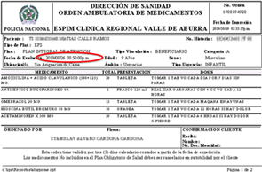

Preguntas Frecuentes
1. ¿Dónde puedo asistir a un comparendo?.
Puede asistir a los siguientes lugares:
Clínica Regional Valle de Aburrá los días Jueves a las 14:00 horas, auditorio 4 piso.
Dispensario de Bello los días martes 09:00 am. , auditorio 2 piso.
2. ¿A cuántas consultas en el año tengo derecho?
El usuario no tiene límites sobre el número de consultas al año, aunque, la Resolución 5261 de 1994, establece que de acuerdo con las frecuencias nacionales, un usuario consulta normalmente al médico general en promedio dos (2) veces por año.
3. ¿Cuánto tiempo tengo para reclamar los medicamentos?
A partir de la fecha impresa en la fórmula tiene 72 horas para reclamar su fórmula 
4. ¿Qué citas me generan comparendo?
No Reclamar fórmulas de Transcripciones.
No asistir a citas de Medicina Laboral.
No asistir a citas de Fisioterapia
No asistir a las citas de Crecimiento y desarrollo.
5. ¿Dónde se solicitan las citas de Planificación Familiar?
6. ¿Donde se solicitan las citas de Crecimiento y Desarrollo?
Las citas de Crecimiento y Desarrollo se solicitan en el teléfono 3396600 ext 6883.
7. ¿Cuál es el procedimiento para transcribir una incapacidad?
El procedimiento para transcribir una incapacidad es el siguiente...
8. ¿Qué es la atención inicial de urgencias?
Es la atención que se presta a un paciente con una urgencia para estabilizar sus signos vitales (respiración, latidos del corazón, tensión o presión arterial), hacerle un diagnóstico y determinar el destino (lugar al cual se debe llevar) con el fin de evitar la muerte o un daño mayor en su salud.
9. ¿ Que debo hacer para solicitar la desafiliacion de un beneficiario ?
El beneficiario debe presentar una carta solicitando la desafiliacion del Subsistema de Salud de la Policía Nacional, recuerda que si es el titular que solicita la desafiliación debe presentar además, copia de la sentencia de divorcio
10. ¿ Puedo solicitar la desafiliación de mi hij@ menor de edad?
Recuerda que la Policía Nacional pertenece a un régimen especial exceptuado, por lo tanto los hijos menores de edad no pueden ser desafiliados.
11. ¿Como puedo solicitar la copia de mi historia clínica ?
.Debo solicitar un formato de solicitud de historia clínica en la fotocopiadora ubicada en
el sótano de la Clínica Regional Valle De Aburrá, o descargarlo
Aquí
12. ¿Cuál es la línea habilitada para cancelar citas otorgadas en el Call Center?
Para cancelar las citas solicitadas en el Call Center puede hacerlo enviado un mensaje a la línea Whatssap 3023929666, en los siguientes horarios:
Lunes a viernes: 07:00 a 17:00 horas y los días sábados de 07:00 a 12:00 horas
13. ¿Cuál es la línea habilitada para cancelar citas otorgadas en el ESPAB de Bello?
Para cancelar las citas solicitadas en el dispensario de Bello puede hacerlo enviado un mensaje a la línea WhatsApp 3506656774, en los siguientes horarios: Lunes a viernes: 07:00 a 17:00 horas y los días sábados de 07:00 a 12:00 horas.
14. ¿Qué horario tiene el servicio de urgencias odontológicas en la Clínica Regional Valle de Aburrá?
Lunes a viernes: 07:00 a 16:30 horas y los días sábados de 07:00 a 10:00 horas.
11. ¿ ?
...